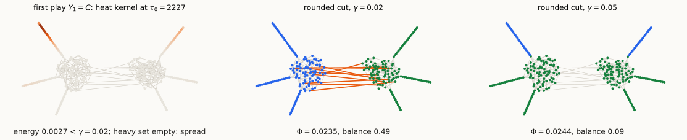

A primal-dual loop: penalize concentrated plays, round spread ones,
and let the regret bound end the loop
In density-matrix form. With \(\Pi=\operatorname{diag}(\pi)\) and the Gram matrix \(X\) of the \(v_i\), set \(Y=\Pi^{1/2}X\Pi^{1/2}\). Then \[\begin{align*} \mathrm{SDP}(b) : &\min\ \langle\mathcal L,Y\rangle \\ \text{s.t.}& Y\succeq0,\ \operatorname{tr}Y=1,\ Y\sqrt\pi=0\\ & \|v_i\|^2=\frac{Y_{ii}}{\pi_i}\le\frac1b . \end{align*}\] The plays are density matrices on \(W=\sqrt\pi^{\perp}\), the space where \(\mathcal L\succeq\lambda_2 I\).
Notation: \(P\) projects onto \(W\); \(\ \Delta_H=P\operatorname{diag}(\mathbf 1_H)P\) is the penalty on a vertex set \(H\); \(\ \langle\Delta_H,Y\rangle\) is the variance contributed by \(H\) (next slide).
BalSep\((G,b,\gamma)\). \(\ \tau_0=\frac{8\ln n}\gamma\), \(\ \eta=\frac1{4\gamma}\), \(\ T=\lceil32\ln n\rceil\), \(\ S_0=0\). For \(t=1,\dots,T\):
If the loop finishes, certify: every \(b\)-balanced \(S\) has \(\Phi(S)\ge\gamma/8\).
A play \(Y\) is an embedding with total variance \(\operatorname{tr}Y=\sum_i\pi_i\|v_i\|^2=1\). For any partition \(V=H\cup L\): \[1=\underbrace{\langle\Delta_H,Y\rangle}_{\text{variance on }H}+\underbrace{\langle\Delta_L,Y\rangle}_{\text{variance on }L},\qquad\langle\Delta_H,Y\rangle=\sum_{i\in H}\pi_i\|v_i\|^2 .\]
Heavy sets are small (Markov). \(\ \frac{16}b\,\pi(H_t)\le\langle\Delta_{H_t},Y_t\rangle\le1\), so \(\ \pi(H_t)\le\frac b{16}\).
| energy \(\langle\mathcal L,Y_t\rangle\) | variance split | action | |
|---|---|---|---|
| (a) | \(\ge\gamma\) | — | certify |
| (c) | \(<\gamma\) | heavy share \(\ge\frac12\): half the variance on volume \(\le\frac b{16}\) | penalize \(H_t\) |
| (b) | \(<\gamma\) | light share \(>\frac12\): variance spread over volume \(\Omega(b)\) | round |
Both certificates say: if a \(b\)-balanced \(S\) with small \(\bar\phi(S)\) existed, the loop would have behaved differently. To prove it, plug the cut embedding \(U_S=xx^\top\) into the analysis as a comparator. Three numbers are needed:
| term in the analysis | value at \(U_S\) | meaning |
|---|---|---|
| energy \(\ \langle\mathcal L,U\rangle\) | \(=\bar\phi(S)\) | the comparator is as good as the cut |
| penalty \(\ \langle2\gamma\Delta_H,U\rangle\), \(\ \pi(H)\le\frac b{16}\) | \(\le\frac\gamma8\) | a small set holds at most \(\frac{\pi(H)}b\le\frac1{16}\) of a balanced cut’s variance |
| range \(\ D(U\Vert C)\), \(\ C=e^{-\tau_0\mathcal L}/Z\) | \(=\tau_0\,\bar\phi(S)+\ln Z\ \le\ \tau_0\,\bar\phi(S)+\ln n\) | the center finds a sparse cut likely |
So \(D(U_S\Vert C)=O(\log n)\) exactly when \(\bar\phi(S)=O(\gamma)\): with the heat-kernel center, a sparse cut costs as little as the uniform center’s worst case.
Claim. If \(\langle\mathcal L,Y_t\rangle\ge\gamma\) for some \(t\le T\), then every \(b\)-balanced \(S\) has \(\bar\phi(S)\ge\frac{3\gamma}4\).
Proof. \(Y_t\) minimizes \(F(Y)=\eta\langle S_{t-1},Y\rangle+D(Y\Vert C)\) over density matrices on \(W\) (Gibbs), so \(F(Y_t)\le F(U_S)\). Expand both sides with \(\log C=-\tau_0\mathcal L-\ln Z\): \[\underbrace{\eta\langle S_{t-1},Y_t\rangle}_{\ge0}+\underbrace{\operatorname{tr}Y_t\log Y_t}_{\ge-\ln n}+\tau_0\langle\mathcal L,Y_t\rangle+\ln Z\ \le\ \underbrace{\eta\langle S_{t-1},U_S\rangle}_{\le\eta(t-1)\frac{2\gamma}{16}\le\ln n}+\tau_0\,\bar\phi(S)+\ln Z .\] So \(\langle\mathcal L,Y_t\rangle\le\bar\phi(S)+\frac{2\ln n}{\tau_0}=\bar\phi(S)+\frac\gamma4\). \(\square\)
Low energy, heavy share \(\ge\frac12\): half the variance sits on \(H_t\), a set of volume \(\le\frac b{16}\). The loss \(M_t=2\gamma\,\Delta_{H_t}\) taxes the variance on \(H_t\): \[\langle M_t,Y_t\rangle=2\gamma\cdot\underbrace{\langle\Delta_{H_t},Y_t\rangle}_{\text{heavy share}}\ \ge\ \gamma,\qquad 0\preceq M_t\preceq2\gamma I .\]
On the Lecture 10 example the first play is already spread (heavy set empty), so the loop stops in round 1 (see the whisker-graph slide). Penalties are needed when a piece of volume \(\le\frac b{16}\) holds half the variance.
For \(x=\Pi^{1/2}y\in W\) (so \(\sum_i\pi_iy_i=0\)): \[x^\top\Delta_Hx=\sum_{i\in H}\pi_i\,(y_i-0)^2 .\]
Rounding (stated). If \(\langle\mathcal L,Y\rangle<\gamma\) and the light share is at least \(\frac12\) (the light vertices, \(\|v_i\|^2<\frac{16}b\), hold at least half the variance), then for a Gaussian \(g\), with constant probability, a sweep cut of \(y_i=\langle v_i,g\rangle\) is \(\Omega(b)\)-balanced with \(\Phi=O(\sqrt\gamma)\) (constants depend on \(b\)).
Idea of proof (notes):

Theorem. If BalSep runs all \(T=\lceil32\ln n\rceil\) rounds, every \(b\)-balanced \(S\) has \(\bar\phi(S)\ge\frac\gamma4\), hence \(\Phi(S)\ge\frac\gamma8\).
Proof. Lecture 10’s local-norm bound with center \(C\), for losses, against the comparator \(U_S\): \[\sum_t\langle M_t,Y_t\rangle\ \le\ \Big\langle\sum_tM_t,U_S\Big\rangle+\eta\sum_t\langle M_t^2,Y_t\rangle+\frac{D(U_S\Vert C)}\eta .\] Width \(\rho=2\gamma\), so \(M_t^2\preceq2\gamma M_t\) and \(\eta\rho=\frac12\). With \(\langle M_t,Y_t\rangle\ge\gamma\) each round and the comparator table: \[\frac{T\gamma}2\ \le\ T\cdot\frac{2\gamma}{16}+4\gamma\big(\tau_0\bar\phi(S)+\ln n\big)=\frac{T\gamma}8+32\ln n\,\bar\phi(S)+4\gamma\ln n .\] With \(T\ge32\ln n\): \(\ 12\gamma\ln n\le32\ln n\,\bar\phi(S)+4\gamma\ln n\), so \(\bar\phi(S)\ge\frac\gamma4\). \(\square\)
| recursive eigenvector | MMWU (after Orecchia–Sachdeva–Vishnoi 2012) | |
|---|---|---|
| each round plays | Fiedler vector (\(\eta=\infty\), FTL) | heat kernel from \(\tau_0=O(\log n/\gamma)\), penalized (FTRL with center) |
| a violation is handled by | removing the heavy set | penalizing it: edges to ground |
| rounds | up to \(\Theta(n)\) | \(\le\lceil32\ln n\rceil\), by the regret bound |
| cost per round | one eigenvector | \(O(\log n)\) products \(e^{-A}u\), \(\tilde O(m)\) each (§3) |
| total time | \(\tilde\Omega(mn)\) worst case | \(\tilde O(m)\) |
What the oracle needs: \(\|v_i\|^2\), \(\ \langle\mathcal L,Y_t\rangle=\frac1{\mathrm{vol}(V)}\sum_{ij\in E}w_{ij}\|v_i-v_j\|^2\), and one random projection. All are distances in the embedding.
| method | approximates \(e^{-x}\) by | cost per product |
|---|---|---|
| Chebyshev / Lanczos | a polynomial of degree \(\approx\sqrt{\|A\|\log\frac1\delta}\) | \(\tilde O\big(m/\sqrt\gamma\big)\) |
| rational (OSV) | \(p_k\big((I+A/k)^{-1}\big)\), \(k=O(\log\frac1\delta)\) (Saff–Schönhage–Varga) | \(k\) Laplacian solves: \(\tilde O(m)\) |
The rational approximation converges geometrically on all of \([0,\infty)\), so the cost does not depend on \(\|A\|\), hence not on \(\gamma\): total \(\tilde O(m)\). With polynomials the large starting time \(\tau_0\) would cost \(\tilde O(m/\sqrt\gamma)\). Lecture 9’s solvers are what make the heat kernel cheap.
Reading: Lecture 11 notes; OSV 2012; Sachdeva–Vishnoi, the chapters on approximating \(e^{-x}\) (polynomial and rational).
| Object | Definition |
|---|---|
| center, play | \(C=e^{-\tau_0\mathcal L}/Z\) on \(W=\sqrt\pi^\perp\); \(\ Y_t\propto e^{-\tau_0\mathcal L-\eta S_{t-1}}\); \(\ \|v_i\|^2=(Y_t)_{ii}/\pi_i\) |
| heavy set | \(H_t=\{i:\|v_i\|^2\ge16/b\}\), \(\ \pi(H_t)\le b/16\) |
| variance on \(H\) | \(\langle\Delta_H,Y\rangle=\sum_{i\in H}\pi_i\|v_i\|^2\); \(\ \operatorname{tr}Y=1\); heavy share \(\langle\Delta_{H_t},Y_t\rangle\), light share \(\langle\Delta_{L_t},Y_t\rangle\) |
| penalty | \(\Delta_H=P\operatorname{diag}(\mathbf 1_H)P\): edges of weight \(\pi_i\) from \(i\in H\) to ground; the only loss is \(2\gamma\Delta_{H_t}\) |
| parameters | \(\tau_0=8\ln n/\gamma\), \(\ \eta=1/(4\gamma)\), \(\ T=\lceil32\ln n\rceil\), \(\ 0\preceq M_t\preceq2\gamma I\) |
| cut comparator | \(U_S=xx^\top\): \(\ \langle\mathcal L,U_S\rangle=\bar\phi(S)\), \(\ \langle\Delta_H,U_S\rangle\le\pi(H)/b\), \(\ D(U_S\Vert C)=\tau_0\bar\phi(S)+\ln Z\) |
| certificates | (a) \(\langle\mathcal L,Y_t\rangle\ge\gamma\Rightarrow\bar\phi(S)\ge\frac{3\gamma}4\); \(\ \) \(T\) rounds \(\Rightarrow\bar\phi(S)\ge\frac\gamma4\), for every \(b\)-balanced \(S\) |
| local-norm bound (losses, center) | \(\sum\langle M_t,Y_t\rangle\le\langle\sum M_t,U\rangle+\eta\sum\langle M_t^2,Y_t\rangle+\frac{D(U\Vert C)}\eta\) |